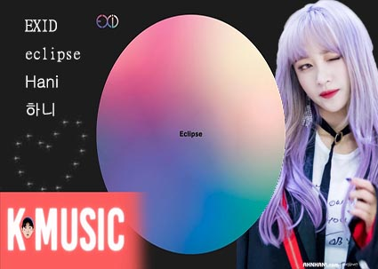

目前就讀世新大學資訊傳播學系，正在學習photoshop、CSS、html等技能。我喜歡音樂，曾經是教會樂團的吉他手，音樂已經成為我生命中的一部分，每當我彈起吉他心情就會覺得很愉快，我很享受每一次在彈奏的過程。我也喜歡騎檔車，當風吹過我的身體，看著街邊的景致，一次次的換檔感受引擎的嘶吼充斥著滿滿的熱血。
I'm a SHU student major in information and communication department,I'm learning photoshop、CSS、html.I like music,I used to be a guitar player n the church.I think music is part of my life.When I play guitar,I will feel comfortable,and I enjoy it a lot.I also like to ride motorcycle,when the wind get through my body,look at the scenery around the street feel the yelling of the engine.It's really excited.
我第一次打工是在一間以貓咪為主題的餐廳打工，當時我才15歲，我體會到服務生需要有一定的反應速度以及應變應對的能力，除了面對客人的情緒還需要跟內場的廚師們做協調溝通，整理環境清潔、記住菜名等等。有時候內場忙到不可開交還需要進到廚房幫忙出餐點。我當時的工作時數比其他工讀生多出很多，第一個感覺是為什麼我要上那麼多小時?直到我領到第一份薪水時我才體會一切的辛勞都值得了。
My first part time job is a restaurant server.The restaurant theme is about cat.That year I'm 15 years old.I notice that "Be a server require fast reaction and adaptability."Besides you need to face the customer emotions and cooperate with chief.clean up the surrounding,remember the dishes name.Sometimes kitchen become to rush,I need to go into the kitchen and help them to make the dishes.I always felt tired after I get off the work but When I take my first salary I knew that all the laborious are worth enough.
我12歲時我媽媽透過介紹找了一位吉他老師，當時我就誤打誤撞的就開始學習吉他，當時的我很不認真練琴，老師就很生氣就不教我，於是我就開始在摸索中學習新的技巧，到了現在我已經學習吉他快要7年。在高中的三年也在吉他社中度過，甚至現在我到了大學我仍然保持初衷參加了吉他社。
when I was 12 my mom find a guitar teacher and ask me Do you want to learn guitar?I accidentally started the road of learning guitar.I'm to young at that time I don't practice hard,My teacher was angry and he saied he don't want to teach me anymore.After he left I start to feel about guitar skills by myself.As time goes by ,I had learn guitar almost 7 years.My high school life is also end in the guitar club,even now I'm in the college I still join the guitar club without change my original intention.
資訊傳播學系information and communication
花蓮高中Hualien High School
太平洋是所有藍衫人的記憶，一踏入校園就看見那遼闊的太平洋，所有煩惱都忘記縱使讀書壓力逼迫著我們的身心，但那海風吹過就會身心舒暢。老師們都幽默風趣教學認真，學校也注重多元發展，在美術、音樂、體育各方面均衡發展。
The Pacific Ocean is the memory of all the blue-shirt high school students,As soon as you step into the campus,when you see the Pacific Ocean you will forget all the bad things.though it's hard to study and under lots of pressure.but as long as the wind of the get though our body.it's so comfortable.teachers in Hualien high school are humorous,they also teacher hard.school are also focus on art,music,and physical education.
我很喜歡聽音樂，不論是來自哪個國家，我很喜歡1960年代美國的搖滾樂團GunN'Roce。我對他完完全全的著迷無法自拔，我覺得他們的音樂有一種魔力會讓人覺得很愉悅。
I like music a lot no mater where is it come from.I used to listen to 1960 ROCK BAND Gun N'Rose I'm fascinated with it.I think there music have some magic that will make people feel good.
我也很喜歡韓國女團EXID，她們可以稱做韓國的奇蹟女團，從即將退出歌壇到成為一線女團，我除了喜歡它們的音樂之外我也很喜歡其中的團員Hani，她是個高智商女孩，短短三個月準備多益就考到了金色證書，加上她大剌剌的個性讓我更喜歡她。
I also like a Korea girl band EXID,they can be called as a miracle girl band in Korea.From leaving the music business to become a most popular band.Besides I also like the member of EXID who called Hani.She is a genius girl.She only prepare TOEIC for three months and she got the golden certification.Her casual personalty makes me like her more.
這是韓國女團EXID上一張迷你專輯eclipse，旁邊是團員Hani也是我的女神
